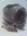
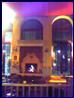
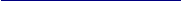

|
Σας ευχαριστούμε για την επίσκεψη σας στο διαδίκτυο, περιμένουμε να σας γνωρίσουμε και από κοντά. |


|
Τα μουσικά ακούσματα των δεκαετιών 60s, 70s, 80s αλλά και 90s είναι το βασικό μουσικό πρόγραμμα του BAR, με προτίμηση την Rock σκηνή. Στην ιδιαιτερότητα του ΒΑR προστέθηκε πρόσφατα το Studio με σκοπό την εξυπηρέτηση μουσικών Group που επιθυμούν να προβάρουν τις δημιουργίες τους. |
|
Εν λειτουργία από το 1989 το Cafe Bar Illusion (Ανέκαθεν) προσφέρει διασκέδαση με μια ατμόσφαιρα διαφορετική από ότι έχετε συνηθίσει. Βάση σε αυτό είναι ο ποιοτικός κόσμος διαφορετικών ηλικίων, η αρχιτεκτονική και διακόσμηση καθώς και η πληθώρα ποτών και μπυρών εισαγωγής. |